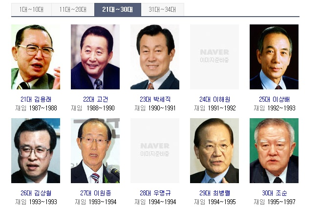

대한민국의 수도인 서울특별시의 시장이다. 임기는 4년이며, 3선까지 가능하다. 서울특별시의 규모만큼이나 사업을 추진할 수 있는 권한과 나라에 미치는 영향력도 매우 크며, 정치적 비중도 아주 높다.
다른 광역자치단체 수장이 차관급으로 대우받는 데 비하여, 서울특별시장은 유일하게 장관급으로 대우받는다. 이는 조선시대에도 비슷했는데, 관찰사(지금의 도지사) 등은 참판(차관)급(종2품) 대우를 받았지만 한성판윤(지금의 서울시장)은 판서(장관)급(정2품) 대우를 받았다. 2010년대 중반 이후 경기도 인구가 서울시를 추월하기는 했지만, 서울특별시장의 위상이나 특별 대우는 달라지지 않을 것으로 보인다.
서울특별시장은 '특별시의 시장'으로서 정치적 영향력 외에도 지자체장 자체의 권한이 막강한 반면, 경기도 지사는 도의 지사로서 특별시장, 광역시장에 비하면 지자체 내의 권한이 상대적으로 약하기 때문이다[2]. 여기에 서울시의 수도로서 위상이 플러스되는 것은 말할 것도 없고... 다만 국가의전서열 목록에는 없다(서울특별시장을 직속으로 두는 국무총리는 의전서열 5위). 서울시가 설립하고 운영 중인 서울시립대학교의 학교운영위원장을 맡고 있기도 하다.조선시대엔 한성부판윤(漢城府判尹) 또는 한성판윤 또는 판윤 이라고 했다. 이 판윤이라는 직책은 행정, 사법, 치안을 모두 담당했기에 오늘날로 치면 서울 시장·고등법원장·고등검찰청장을 겸하는 자리다.
